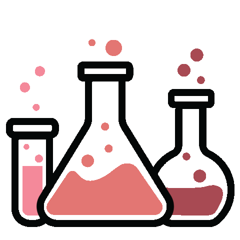
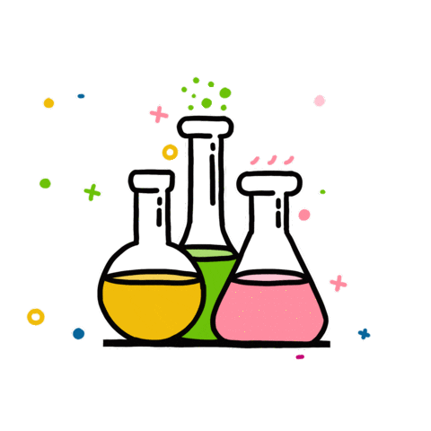
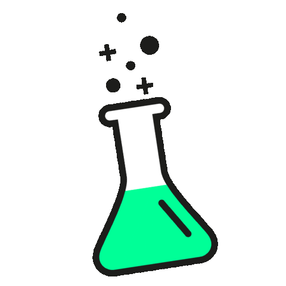
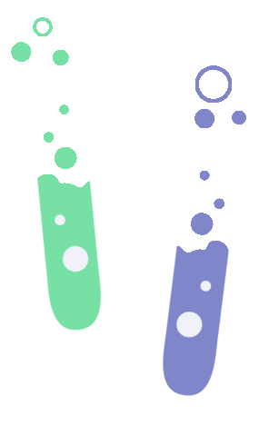

Moments before lecture
   I'm in Room 003: Lewis Thomas Laboratory reviewing, and waiting for my Genetics class to start. I'm pondering what we learned about previously; last lecture, we explored how meiotic recombination makes us unique. I look to the seat next to me. The red, cushiony seat, soft and comfortable, is empty. But there is someone sitting a few rows in front of me: a student saves a seat, or a space, for a friend by laying their jacket beside them. I can hear the rustling of the paper as they finish up reviewing their notes before class. At the same time, I reach for my water bottle that I placed on the ground -- carpeted floor. It is cool to the touch. The bottle's contents taste rather refreshing The room itself -- the lecture hall -- is chilly too, likely from the air conditioning. The walls are painted white and undecorated, but the room itself is symbolic of decades of teaching some of the most brilliant scientists of our time. In this building, I have gratitude. In this moment, I have the space and time to express thanks and gratitude for the opportunity to study in this place. I hear footsteps from behind me. The professor is here, walking towards the podium in preparation for the lecture in a few minutes. I take a pause, getting ready. A deep breath, as I prepare to listen.